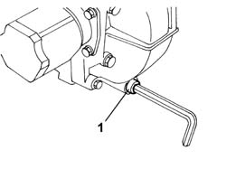
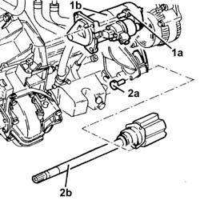
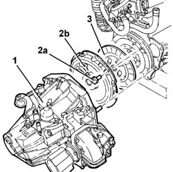

1004D10 POWER UNIT (manual gearbox), removed - Separate and reassemble
- Path
- Procedures > 10 ENGINE > 1004 ENGINE AND POWER UNIT > 1004D REMOVE ENGINE AND WASH > 1004D10 POWER UNIT (manual gearbox), removed - Separate and reassemble
- Kind
- repair procedure (removal / refitting; the operation number is the code)
- Applies to
- engines: 2.4 JTD 10V; all production periods
- Interactive page
- https://sloeber94.github.io/elrnDB-lThss/en/#/75422
Applies to: all engines; all production periods
 Removing
Removing
 Refitting
Refitting- Position a suitable container for collecting the transmission fluid under the differential.
1. Undo the plug and drain the transmission fluid into the container.
- Remove the container placed under the differential.

Applies to: all engines; all production periods
- Disconnect the electrical wiring from the starter motor.
 | Description | Connector |
|---|---|---|
. | Starter motor | A020A |
| Description | Connector |
|---|---|---|
. | Starter motor | A020B |
1. Undo the fixing bolts (1a) and remove the starter motor (1b).
2. Undo the fixing bolts (2a) and remove the intermdiate drivehsaft (2b) from the housing.

Applies to: all engines; all production periods
1. Undo the fastenings and remove the gearbox and differential.
2. Undo the bolts (2a) and remove the clutch casing (2b).
3. Remove the clutch plate.

Applies to: all engines; all production periods
Refitting
Removing- Fit the clutch plate and the clutch casing centering them using a suitable tool.
 | Description | Code | Function |
|---|---|---|---|
. | Tool for centering clutch | 1.870.081.000 | Centre the clutch |
- Tighten the bolts fixing the clutch drip tray to the flywheel to the recommended torque.
 | Value - daNm | Fastening | Component | Ø |
|---|---|---|---|---|
. | 2.8 | Bolt | CLUTCH ASSEMBLY | M8 |
- Fit the gearbox-differential unit tightening the nuts and bolts to torque.
| Value - daNm | Fastening | Component | Ø |
|---|---|---|---|---|
. | 8 | Bolt | MANUAL GEARBOX/DIFFERENTIAL | M12 X 1.25 |
| Value - daNm | Fastening | Component | Ø |
|---|---|---|---|---|
. | 5.5 | Bolt | MANUAL GEARBOX/DIFFERENTIAL | M10 X 1.25 |
| Value - daNm | Fastening | Component | Ø |
|---|---|---|---|---|
. | 8 | Nut | MANUAL GEARBOX/DIFFERENTIAL | M12 X 1.25 |
- Fit the starter motor and tighten the fixing bolts to torque.
| Value - daNm | Fastening | Component | Ø |
|---|---|---|---|---|
. | 2.7 | Bolt | STARTER MOTOR | M8 |
- Fit the intermediate driveshaft in the housing and press fit it in the housing on the differential.
- Tighten the bolts fixing the intermediate driveshaft to the intermediate shaft/engine support.
- Connect the motor electrical wiring
| Description | Connector |
|---|---|---|
. | Starter motor | A020A |
| Description | Connector |
|---|---|---|
. | Starter motor | A020B |